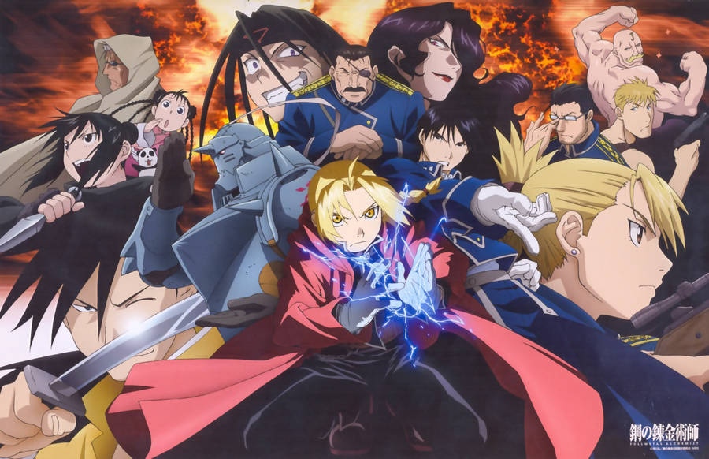
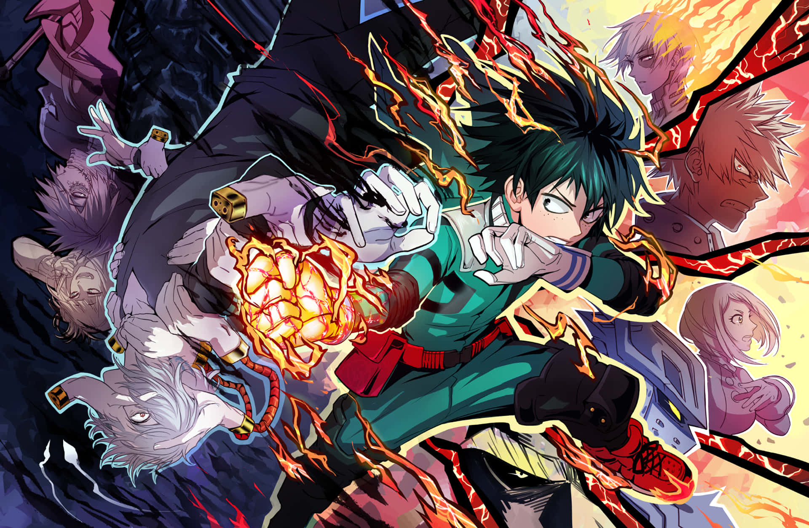

My All-Time Top Five Favorites

DRAGON BALL
Dragon Ball is more than just an anime for me; it's a cherished part of my childhood and a profound source of nostalgia. From Goku's innocent adventures in the original series to the intense battles and transformations in Dragon Ball Z, this anime has been a constant companion. The characters, the iconic battles, and the overarching themes have left an indelible mark on my heart. The sense of wonder and excitement I felt watching Dragon Ball is unparalleled, making it not just a series I enjoy, but a journey that shaped my appreciation for anime. It's a timeless classic that continues to evoke a deep sense of emotion and fondness whenever I revisit it.

Full Metal Alchemist: Brotherhood
Fullmetal Alchemist: Brotherhood holds a special place in my heart as a favorite. The intricate plot, character depth, and exploration of profound themes make it stand out. The Elric brothers' journey, moral dilemmas, and the quest for the Philosopher's Stone create a captivating narrative. The commitment to the manga source material enhances the storytelling, making it emotionally resonant and intellectually engaging. The perfect balance of action, philosophy, and heartfelt moments contributes to an anime experience that I cherish. It's not just a series; it's a source of enjoyment and connection, offering a unique blend of excitement and depth.

Death Note
Death Note, where my anime journey began, holds a special significance for me. The suspenseful cat-and-mouse game between Light Yagami and L, the complex moral dilemmas surrounding the Death Note, and the psychological depth of the characters fascinated me from the start. The intense narrative, coupled with the brilliant concept of a supernatural notebook, made Death Note a captivating introduction to the world of anime. The themes of morality, justice, and the consequences of absolute power left a lasting impression on me, shaping my appreciation for thought-provoking storytelling. It's not just a series I watched; it's a pivotal chapter in my anime journey that ignited my passion for this captivating form of entertainment.

Mob Psycho 100
Mob Psycho 100 marks a significant part of my anime journey. The series, with its distinctive art style and engaging storyline, stands out for me. Following Mob's adventures with his psychic abilities is both visually appealing and emotionally impactful. The themes of self-discovery and personal growth, combined with the consequences of having extraordinary powers, add depth to the narrative. The dynamic animation and Mob's journey to control his emotions contribute to an entertaining mix of action and character development. Mob Psycho 100 isn't just an anime I watched; it's a memorable part of my viewing experience, offering a unique blend of storytelling and animation that I appreciate.

My Hero Academia
My Hero Academia holds a special place in my anime preferences. The story of Izuku Midoriya and his journey to become a hero in a world of superpowers is both exhilarating and inspiring. The diverse cast of characters, each with their own unique quirks and backgrounds, adds depth to the narrative. The series masterfully combines intense action sequences with moments of friendship and self-discovery. My Hero Academia not only explores themes of heroism but also delves into the challenges and responsibilities that come with it. The strong character development, coupled with impactful battles, makes it an engaging and enjoyable anime. It's a series that consistently delivers excitement and heart.